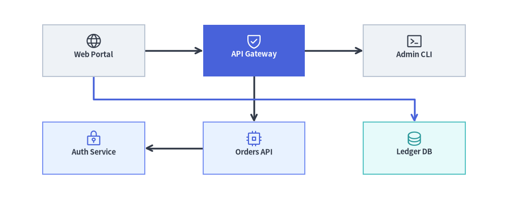
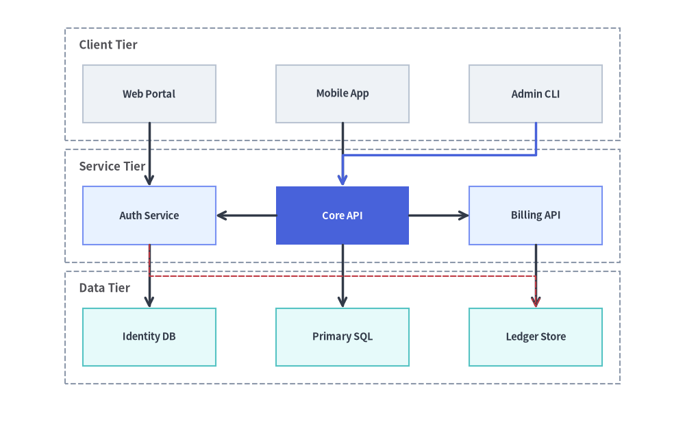

GridGraph: 2D マトリクスレイアウトとチャネルエッジルーティング
GridGraph は、構造化された 2D (row, col) マトリクスにノードを配置し、セル間のエッジを整然とルーティングします。水平・垂直に隣接するセル同士は直接接続される一方、非隣接セル間のクロスエッジは行間・列間のハイウェイチャネル（edge_routing="smart"）へ自動的に迂回ルーティングされるため、中間のノードを線が横切ることはありません。
マルチティアのサービスマトリクス、ステートグリッド、カタログ型トポロジ、グリッド整列されたコンポーネントアーキテクチャなど、行と列に沿った表形式の整列を行いたい場合に GridGraph を使用します。layout = g.get_layout(margin=...) を呼び出すことで、セル座標（layout[id].xy / .local_xy）、行・列クラスタのバウンディングボックス（layout.clusters[cid].bottom_left）、およびチャネルルーティングされたエッジのウェイポイント（layout.edges）を取得できます。

Source Code
from drawlib.canvas import save, setup
from drawlib.graph import GridGraph
from drawlib.icons import phosphor
from drawlib.lines import lines
from drawlib.shapes import rectangle
from drawlib.styles import Styles
setup(width=122, height=48)
g = GridGraph(
columns=3,
col_sep=14.0,
row_sep=11.0,
edge_routing="smart",
default_node_width=24.5,
default_node_height=12.5,
)
# Row 0: Ingress & Routing Tier
g.cell("web", row=0, col=0)
g.cell("gateway", row=0, col=1)
g.cell("admin", row=0, col=2)
# Row 1: Service & Persistence Tier
g.cell("auth", row=1, col=0)
g.cell("orders", row=1, col=1)
g.cell("ledger", row=1, col=2)
# Direct grid edges + smart channel-routed edge through the inter-row corridor
g.edge("web", "gateway")
g.edge("gateway", "admin")
g.edge("gateway", "orders")
g.edge("orders", "auth")
g.edge("web", "ledger")
# 1. Solve 2D grid coordinates & smart inter-channel edge polylines
layout = g.get_layout(margin=5.0)
# 2. Render edges (highlighting the smart channel-routed cross-edge web -> ledger)
for e in layout.edges:
edge_st = Styles.PrimaryBold if (e.src, e.dst) == ("web", "ledger") else Styles.DarkBold
lines(e.points, arrow_head="->", style=edge_st)
# 3. Render cell cards & Phosphor icons
cells = {
"web": ("\nWeb Portal", Styles.Neutral, Styles.DarkBold, phosphor.globe, Styles.Dark),
"gateway": ("\nAPI Gateway", Styles.PrimaryFlat, Styles.WhiteBold, phosphor.shield_check, Styles.White),
"admin": ("\nAdmin CLI", Styles.Neutral, Styles.DarkBold, phosphor.terminal_window, Styles.Dark),
"auth": ("\nAuth Service", Styles.PrimaryNeutral, Styles.DarkBold, phosphor.lock_key, Styles.Primary),
"orders": ("\nOrders API", Styles.PrimaryNeutral, Styles.DarkBold, phosphor.cpu, Styles.Primary),
"ledger": ("\nLedger DB", Styles.SecondaryNeutral, Styles.DarkBold, phosphor.database, Styles.Secondary),
}
for cid, (label, box_st, txt_st, icon_fn, ic_st) in cells.items():
n = layout[cid]
rectangle(
n.xy,
width=n.width,
height=n.height,
style=box_st,
text=label,
text_style=txt_st.patch(text_size=10.5),
)
icon_fn((n.x, n.y + 2.3), width=4.2, style=ic_st)
save()
1. 基本概念と基本的な使い方
GridGraph は、(0, 0) を左上スロットとして行インデックスが下方向に増加する整然とした 2D (row, col) マトリクスにノードを配置します。g.cell(id, row, col) でセル位置を明示的に固定するか、未固定ノードを "row-major"（行優先）／"column-major"（列優先）順で自動流し込みでき、edge_routing="smart" によって非隣接クロスエッジを行間回廊へ迂回させて隣接セルとの重なりを回避できます。さらに g.cluster_row(...)、g.cluster_column(...)、layout.offset(...) を組み合わせることで、マトリクスの行や列を ArchitectureDiagram の NodeGroup コンテナで囲むことができます。

Source Code
from __future__ import annotations
from drawlib.anim import Animation
from drawlib.canvas import save, setup
from drawlib.diagrams.architecture import (
ArchitectureDiagram,
Node,
NodeGroup,
PhosphorIcon,
)
from drawlib.graph import GraphLayout, GridGraph
from drawlib.icons import code as code_icons
from drawlib.icons import phosphor
from drawlib.lines import line, lines
from drawlib.shapes import circle, rectangle
from drawlib.smartarts import SourceCode, SourceCodeStyles
from drawlib.styles import Styles
from drawlib.text import text
W, H = 138.0, 82.0
setup(width=W, height=H)
anim = Animation(fps=10.0, loop=0)
CODE_TEXT_SIZE = 10.0
PT_TO_CANVAS = W / 720.0
FONT_CANVAS = CODE_TEXT_SIZE * PT_TO_CANVAS
LINE_H = FONT_CANVAS * 1.8
PAD_Y = FONT_CANVAS * 1.2
CODE_STYLES = SourceCodeStyles.get("default", font_lang="en", text_size=CODE_TEXT_SIZE).patch(
box_style=Styles.Neutral.patch(shape_fill_color=(0, 0, 0, 0), shape_line_width=0),
)
PANE_HEADER = Styles.Neutral.patch(
shape_fill_color=(238, 243, 250),
shape_line_color=(203, 213, 225),
shape_line_width=1.2,
shape_r=0.0,
)
EDITOR_BODY = Styles.Neutral.patch(
shape_fill_color=(250, 252, 255),
shape_line_color=(203, 213, 225),
shape_line_width=1.2,
shape_r=0.0,
)
TAKEAWAY_BODY = Styles.Neutral.patch(
shape_fill_color=(242, 246, 253),
shape_line_color=(203, 213, 225),
shape_line_width=1.2,
shape_r=0.0,
)
STUDIO_BODY = Styles.Neutral.patch(
shape_fill_color=(239, 243, 249),
shape_line_color=(203, 213, 225),
shape_line_width=1.2,
shape_r=0.0,
)
PART_ITEMS = [
("1. Matrix Cells", "columns=3 & g.cell(r,c)"),
("2. Auto-Flow", "row-major vs col-major"),
("3. Smart Channel", "smart vs straight"),
("4. Row/Col Bands", "cluster_row & column"),
]
def shift_layout(layout: GraphLayout, dx: float, dy: float) -> GraphLayout:
"""Translate a solved GraphLayout into the right studio coordinate sheet."""
for nl in layout.nodes.values():
nl.xy = (round(nl.x + dx, 2), round(nl.y + dy, 2))
if nl.parent_id is None:
nl.local_xy = nl.xy
for cl in layout.clusters.values():
cl.bbox = (round(cl.cx + dx, 2), round(cl.cy + dy, 2), cl.width, cl.height)
if cl.parent_id is None:
cl.local_bottom_left = cl.bottom_left
for el in layout.edges:
el.src_port = (round(el.src_port[0] + dx, 2), round(el.src_port[1] + dy, 2))
el.dst_port = (round(el.dst_port[0] + dx, 2), round(el.dst_port[1] + dy, 2))
el.waypoints = [(round(wx + dx, 2), round(wy + dy, 2)) for wx, wy in el.waypoints]
return layout
def draw_step_bar(active_part: int) -> None:
"""Draw top 4-part progress bar (active_part is 1..4)."""
pill_w = 31.0
pill_h = 7.4
gap = 2.0
start_x = 4.0 + pill_w / 2.0
cy = 75.2
for idx, (label, sublabel) in enumerate(PART_ITEMS, start=1):
cx = start_x + (idx - 1) * (pill_w + gap)
if idx > 1:
prev_cx = cx - (pill_w + gap)
line(
(prev_cx + pill_w / 2.0 + 0.2, cy),
(cx - pill_w / 2.0 - 0.2, cy),
style=Styles.PrimaryBold if idx <= active_part else Styles.MutedThin,
)
if idx == active_part:
st = Styles.PrimaryFlat.patch(shape_r=1.4)
tst = Styles.WhiteBold.patch(text_size=10.3)
sub_tst = Styles.White.patch(text_size=9.5)
elif idx < active_part:
st = Styles.PrimaryNeutral.patch(shape_r=1.4, shape_line_width=1.1)
tst = Styles.PrimaryBold.patch(text_size=10.3)
sub_tst = Styles.Primary.patch(text_size=9.5)
else:
st = Styles.Neutral.patch(shape_r=1.4, shape_line_width=1.1)
tst = Styles.MutedBold.patch(text_size=10.3)
sub_tst = Styles.Muted.patch(text_size=9.5)
rectangle((cx, cy), width=pill_w, height=pill_h, style=st)
text((cx, cy + 1.35), label, style=tst)
text((cx, cy - 1.55), sublabel, style=sub_tst)
def draw_left_pane(
active_part: int,
code_lines: list[str],
hl_range: tuple[int, int],
icon_fn: object,
summary_title: str,
summary_line1: str,
summary_line2: str,
) -> None:
"""Draw left Python code editor + bottom concept takeaway card."""
x0, w = 4.0, 63.5
cx = x0 + w / 2.0
top_y = 63.2
header_h = 5.4
editor_h = 43.8
takeaway_h = 15.8
rectangle((cx, top_y + header_h / 2.0), width=w, height=header_h, style=PANE_HEADER)
code_icons.python((x0 + 3.6, top_y + header_h / 2.0), width=3.4, style=Styles.Neutral)
text(
(x0 + 6.5, top_y + header_h / 2.0),
"grid_graph_tour.py",
style=Styles.DarkBold.patch(text_size=10.2, halign="left"),
)
text(
(x0 + w - 2.6, top_y + header_h / 2.0),
f"Part {active_part} / 4",
style=Styles.PrimaryBold.patch(text_size=9.8, halign="right"),
)
rectangle((cx, top_y - editor_h / 2.0), width=w, height=editor_h, style=EDITOR_BODY)
hl_start, hl_end = hl_range
hl_top = top_y - PAD_Y - hl_start * LINE_H
hl_bot = top_y - PAD_Y - (hl_end + 1) * LINE_H
hl_cy = (hl_top + hl_bot) / 2.0
hl_h = hl_top - hl_bot
rectangle(
(cx, hl_cy),
width=w - 0.6,
height=hl_h,
style=Styles.Neutral.patch(shape_fill_color=(229, 239, 255), shape_line_width=0),
)
rectangle(
(x0 + 0.55, hl_cy),
width=0.9,
height=hl_h,
style=Styles.PrimaryFlat.patch(shape_line_width=0),
)
SourceCode.draw(
xy=(x0, top_y),
width=w,
code="\n".join(code_lines),
styles=CODE_STYLES,
code_lang="python",
show_linenum=True,
align="top_left",
)
take_cy = 3.6 + takeaway_h / 2.0
rectangle((cx, take_cy), width=w, height=takeaway_h, style=TAKEAWAY_BODY)
circle(
(x0 + 6.4, take_cy),
radius=3.3,
style=Styles.PrimaryNeutral.patch(shape_line_width=1.2),
)
icon_fn((x0 + 6.4, take_cy), width=3.8, style=Styles.PrimaryBold) # type: ignore[operator]
text(
(x0 + 11.4, take_cy + 3.6),
summary_title,
style=Styles.DarkBold.patch(text_size=10.4, halign="left"),
)
text(
(x0 + 11.4, take_cy - 0.2),
summary_line1,
style=Styles.Dark.patch(text_size=9.7, halign="left"),
)
text(
(x0 + 11.4, take_cy - 3.8),
summary_line2,
style=Styles.PrimaryBold.patch(text_size=9.6, halign="left"),
)
def draw_geometry_studio(param_badge: str, footer_caption: str) -> tuple[float, float]:
"""Draw right geometry lab shell, inner coordinate sheet with subtle grid, and footer."""
x0, w = 70.0, 64.0
cx = x0 + w / 2.0
top_y = 63.2
header_h = 5.4
body_h = 59.6
rectangle((cx, top_y + header_h / 2.0), width=w, height=header_h, style=PANE_HEADER)
phosphor.ruler((x0 + 3.6, top_y + header_h / 2.0), width=3.4, style=Styles.Primary)
text(
(x0 + 6.5, top_y + header_h / 2.0),
"Live Geometry & Guides",
style=Styles.DarkBold.patch(text_size=10.2, halign="left"),
)
text(
(x0 + w - 2.6, top_y + header_h / 2.0),
param_badge,
style=Styles.PrimaryBold.patch(text_size=9.6, halign="right"),
)
rectangle((cx, 3.6 + body_h / 2.0), width=w, height=body_h, style=STUDIO_BODY)
sheet_cx, sheet_cy = cx, 36.2
sheet_w, sheet_h = 54.0, 40.0
sx0, sy0 = sheet_cx - sheet_w / 2.0, sheet_cy - sheet_h / 2.0
rectangle(
(sheet_cx, sheet_cy),
width=sheet_w,
height=sheet_h,
style=Styles.Neutral.patch(
shape_fill_color=(255, 255, 255),
shape_line_color=(180, 194, 214),
shape_line_width=1.2,
),
)
g_st = Styles.MutedThin.patch(line_color=(232, 238, 246), line_width=0.8)
for gx in range(1, 6):
vx = sx0 + gx * (sheet_w / 6.0)
line((vx, sy0), (vx, sy0 + sheet_h), style=g_st)
for gy in range(1, 5):
vy = sy0 + gy * (sheet_h / 5.0)
line((sx0, vy), (sx0 + sheet_w, vy), style=g_st)
rectangle(
(cx, 8.4),
width=59.2,
height=5.2,
style=Styles.Neutral.patch(
shape_fill_color=(255, 255, 255),
shape_line_color=(203, 213, 225),
shape_line_width=1.1,
shape_r=2.4,
),
text=footer_caption,
text_style=Styles.DarkBold.patch(text_size=9.8),
)
return sheet_cx, sheet_cy
def draw_sub_pills(scx: float, labels: list[str], active_idx: int) -> None:
"""Draw 3-step tracker pills near the top of the studio sheet."""
pw, ph, pgap = 16.2, 4.2, 0.9
p_start = scx - (3 * pw + 2 * pgap) / 2.0 + pw / 2.0
for idx, lbl in enumerate(labels):
px = p_start + idx * (pw + pgap)
if idx == active_idx:
pst = Styles.PrimaryFlat.patch(shape_r=1.2)
ptst = Styles.WhiteBold.patch(text_size=9.5)
elif idx < active_idx:
pst = Styles.PrimaryNeutral.patch(shape_r=1.2, shape_line_width=1.0)
ptst = Styles.PrimaryBold.patch(text_size=9.5)
else:
pst = Styles.Neutral.patch(shape_r=1.2, shape_line_width=1.0)
ptst = Styles.Muted.patch(text_size=9.5)
rectangle((px, 52.0), width=pw, height=ph, style=pst, text=lbl, text_style=ptst)
GRP_TXT = Styles.DarkBold.patch(text_size=9.5, halign="left", valign="top")
# =========================================================================
# Part 1: Matrix Cells — Explicit (row, col) slots & neighbor grid edges
# =========================================================================
def build_part1_layout() -> GraphLayout:
g = GridGraph(
columns=3,
col_sep=3.8,
row_sep=5.2,
default_node_width=10.2,
default_node_height=6.8,
)
g.cell("Web", row=0, col=0)
g.cell("CDN", row=0, col=1)
g.cell("WAF", row=0, col=2)
g.cell("Auth", row=1, col=0)
g.cell("API", row=1, col=1)
g.cell("DB", row=1, col=2)
g.edge("Web", "CDN")
g.edge("CDN", "WAF")
g.edge("Web", "Auth")
g.edge("CDN", "API")
g.edge("API", "DB")
raw = g.get_layout(width=42.0, height=23.0, margin=2.0)
return shift_layout(raw, 84.2, 21.2)
P1_GRID = build_part1_layout()
PART1_STATES = [
(
"row0",
3.3,
[
"g = GridGraph(columns=3)",
"# Row 0: top tier (y is highest)",
'g.cell("Web", row=0, col=0)',
'g.cell("CDN", row=0, col=1)',
'g.cell("WAF", row=0, col=2)',
"layout = g.get_layout(margin=4)",
"for cid in ['Web','CDN','WAF']:",
" n = layout[cid]",
" rectangle(n.xy, n.width, ...)",
],
(1, 4),
"g.cell(id, 0, c)",
"Step 1: Row 0 Cells Populate the Top Matrix Track",
"1. Top-Left (0, 0) Matrix Origin",
"row=0, col=0 pins top-left cell of the matrix",
"Columns 0..2 advance left-to-right (+X)",
),
(
"row1",
3.3,
[
"g = GridGraph(columns=3)",
'g.cell("Web", row=0, col=0) # top',
'g.cell("CDN", row=0, col=1)',
'g.cell("WAF", row=0, col=2)',
"# Row 1: next tier downward (-Y)",
'g.cell("Auth", row=1, col=0)',
'g.cell("API", row=1, col=1)',
'g.cell("DB", row=1, col=2)',
"layout = g.get_layout(margin=4)",
],
(4, 7),
"g.cell(id, 1, c)",
"Step 2: Row 1 Cells Populate Downward Below Row 0",
"2. Row Index Grows Downward",
"row=1 places Auth, API, DB cleanly under row=0",
"Matching col indices align vertically by X",
),
(
"edges",
3.5,
[
"g = GridGraph(columns=3)",
"# 6 cells pinned in 2x3 matrix...",
"# Connect adjacent H & V cells",
'g.edge("Web", "CDN")',
'g.edge("CDN", "WAF")',
'g.edge("Web", "Auth")',
'g.edge("CDN", "API")',
'g.edge("API", "DB")',
"layout = g.get_layout(margin=4)",
"for e in layout.edges:",
" lines(e.points, ...)",
],
(2, 7),
"layout.edges",
"Step 3: Adjacent Grid Edges Snap to Card Perimeters",
"3. Direct Neighbor Connections",
"Horizontal & vertical neighbor edges stay straight",
"e.points clips cleanly at exact card borders",
),
]
ROW0_META = [
("Web", "(0,0)", Styles.Neutral, Styles.DarkBold),
("CDN", "(0,1)", Styles.PrimaryFlat, Styles.WhiteBold),
("WAF", "(0,2)", Styles.PrimaryNeutral, Styles.DarkBold),
]
ROW1_META = [
("Auth", "(1,0)", Styles.SecondaryNeutral, Styles.DarkBold),
("API", "(1,1)", Styles.PrimaryNeutral, Styles.DarkBold),
("DB", "(1,2)", Styles.White, Styles.DarkBold),
]
for p1_idx, (mode_1, dur, code_1, hl_rng, badge_txt, foot_txt, s_t, s_1, s_2) in enumerate(PART1_STATES):
with anim.frame(duration=dur):
draw_step_bar(1)
draw_left_pane(1, code_1, hl_rng, phosphor.grid_four, s_t, s_1, s_2)
scx, _scy = draw_geometry_studio(badge_txt, foot_txt)
draw_sub_pills(scx, ["1. Row 0 Tier", "2. Row 1 Tier", "3. Grid Edges"], p1_idx)
for c_idx, ref_id in enumerate(["Web", "CDN", "WAF"]):
cx_col = P1_GRID[ref_id].x
text((cx_col, 45.4), f"col {c_idx}", style=Styles.PrimaryBold.patch(text_size=9.5))
y_r0 = P1_GRID["Web"].y
y_r1 = P1_GRID["Auth"].y
text((80.2, y_r0), "row 0", style=Styles.PrimaryBold.patch(text_size=9.5))
text(
(80.2, y_r1),
"row 1",
style=(Styles.PrimaryBold if mode_1 != "row0" else Styles.MutedBold).patch(text_size=9.5),
)
if mode_1 == "edges":
for e in P1_GRID.edges:
lines(e.points, arrow_head="->", style=Styles.DarkBold)
for cid, rc_lbl, box_st, txt_st in ROW0_META:
nl = P1_GRID[cid]
sub_txt = Styles.White.patch(text_size=9.5) if cid == "CDN" else Styles.Muted.patch(text_size=9.5)
rectangle(nl.xy, width=nl.width, height=nl.height, style=box_st.patch(shape_r=1.0))
text((nl.x, nl.y + 1.3), cid, style=txt_st.patch(text_size=9.6))
text((nl.x, nl.y - 1.5), rc_lbl, style=sub_txt)
for cid, rc_lbl, box_st, txt_st in ROW1_META:
nl = P1_GRID[cid]
if mode_1 == "row0":
rectangle(
nl.xy,
width=nl.width,
height=nl.height,
style=Styles.MutedDashed.patch(shape_fill_color=(0, 0, 0, 0), shape_r=1.0),
text=rc_lbl,
text_style=Styles.Muted.patch(text_size=9.5),
)
else:
rectangle(nl.xy, width=nl.width, height=nl.height, style=box_st.patch(shape_r=1.0))
text((nl.x, nl.y + 1.3), cid, style=txt_st.patch(text_size=9.6))
text((nl.x, nl.y - 1.5), rc_lbl, style=Styles.Muted.patch(text_size=9.5))
p1_note = (
"(0, 0) = top-left • Row 0 fills across columns 0..2"
if mode_1 == "row0"
else (
"row index increases downward (row 0 -> row 1)"
if mode_1 == "row1"
else "5 orthogonal grid edges connect adjacent cells"
)
)
text((scx, 18.2), p1_note, style=Styles.DarkBold.patch(text_size=9.5))
# =========================================================================
# Part 2: Auto-Flow — row-major vs column-major & col_sep / row_sep gutters
# =========================================================================
PART2_STATES = [
(
"row_major",
3.3,
[
"g = GridGraph(",
" columns=3,",
' order="row-major", # L->R',
")",
"# Unpinned nodes stream across",
'for nid in ["N1","N2","N3",',
' "N4","N5"]:',
" g.node(nid)",
"layout = g.get_layout(margin=4)",
],
(1, 2),
'order="row-major"',
'order="row-major" Fills Left-to-Right Across Each Row',
"Row-Major Auto-Flow (Default)",
"Unpinned nodes fill (0,0)->(0,1)->(0,2) first",
"Wraps to (1,0)->(1,1) when row reaches columns=3",
),
(
"col_major",
3.3,
[
"g = GridGraph(",
" columns=3, rows=2,",
' order="column-major", # T->B',
")",
"# Fills Col 0, Col 1, Col 2...",
'for nid in ["N1","N2","N3",',
' "N4","N5"]:',
" g.node(nid)",
"layout = g.get_layout(margin=4)",
],
(1, 2),
'order="column-major"',
'order="column-major" Fills Top-to-Bottom Per Column',
"Column-Major Auto-Flow",
"Set rows=2 to stream top-to-bottom per column",
"Fills Col 0 (N1,N2), Col 1 (N3,N4), Col 2 (N5)",
),
(
"gutters",
3.5,
[
"g = GridGraph(",
" columns=3,",
" col_sep=7.0, # X corridor",
" row_sep=7.2, # Y corridor",
" default_node_width=9.6,",
" default_node_height=6.2,",
")",
'for nid in ["N1","N2","N3",',
' "N4","N5","N6"]:',
" g.cell(nid)",
"layout = g.get_layout(margin=4)",
],
(2, 3),
"col_sep & row_sep",
"col_sep & row_sep Control Inter-Cell Corridor Gutters",
"Matrix Corridor Spacing",
"col_sep sets horizontal gap between columns",
"row_sep sets vertical gap for smart channel routes",
),
]
for p2_idx, (mode_2, dur, code_2, hl_rng, badge_txt, foot_txt, s_t, s_1, s_2) in enumerate(PART2_STATES):
with anim.frame(duration=dur):
draw_step_bar(2)
draw_left_pane(2, code_2, hl_rng, phosphor.ruler, s_t, s_1, s_2)
scx, _scy = draw_geometry_studio(badge_txt, foot_txt)
draw_sub_pills(scx, ["row-major", "column-major", "col_sep / row_sep"], p2_idx)
if mode_2 in {"row_major", "col_major"}:
g2 = GridGraph(
columns=3,
rows=2 if mode_2 == "col_major" else None,
order="row-major" if mode_2 == "row_major" else "column-major",
col_sep=4.6,
row_sep=5.4,
default_node_width=10.6,
default_node_height=6.8,
)
nids_2 = ["N1", "N2", "N3", "N4", "N5"]
for nid in nids_2:
g2.node(nid)
lay2 = shift_layout(g2.get_layout(width=50.0, height=26.0, margin=3.2), 77.0, 20.6)
open_x = lay2["N3"].x if mode_2 == "row_major" else lay2["N5"].x
open_y = lay2["N4"].y if mode_2 == "row_major" else lay2["N2"].y
rectangle(
(open_x, open_y),
width=10.6,
height=6.8,
style=Styles.MutedDashed.patch(shape_fill_color=(0, 0, 0, 0), shape_r=1.0),
text="(1,2)",
text_style=Styles.Muted.patch(text_size=9.5),
)
flow_pairs = (
[("N1", "N2"), ("N2", "N3"), ("N4", "N5")]
if mode_2 == "row_major"
else [("N1", "N2"), ("N3", "N4")]
)
for a_id, b_id in flow_pairs:
na, nb = lay2[a_id], lay2[b_id]
if mode_2 == "row_major":
line((na.right, na.y), (nb.left, nb.y), arrow_head="->", style=Styles.PrimaryBold)
else:
line((na.x, na.bottom), (nb.x, nb.top), arrow_head="->", style=Styles.PrimaryBold)
slot_labels = (
["(0,0)", "(0,1)", "(0,2)", "(1,0)", "(1,1)"]
if mode_2 == "row_major"
else ["(0,0)", "(1,0)", "(0,1)", "(1,1)", "(0,2)"]
)
st_cycle = [
Styles.PrimaryFlat,
Styles.PrimaryNeutral,
Styles.PrimaryNeutral,
Styles.SecondaryNeutral,
Styles.Neutral,
]
for idx, nid in enumerate(nids_2):
nl = lay2[nid]
is_first = idx == 0
rectangle(nl.xy, width=nl.width, height=nl.height, style=st_cycle[idx].patch(shape_r=1.0))
text(
(nl.x, nl.y + 1.3),
nid,
style=(Styles.WhiteBold if is_first else Styles.DarkBold).patch(text_size=9.6),
)
text(
(nl.x, nl.y - 1.5),
slot_labels[idx],
style=(Styles.White if is_first else Styles.Muted).patch(text_size=9.5),
)
msg_2 = (
"row-major: N1->N2->N3 (Row 0), then N4->N5 (Row 1)"
if mode_2 == "row_major"
else "column-major: N1->N2 (Col 0), N3->N4 (Col 1), N5"
)
text((scx, 18.2), msg_2, style=Styles.PrimaryBold.patch(text_size=9.5))
else:
g2 = GridGraph(
columns=3,
col_sep=7.0,
row_sep=7.2,
default_node_width=9.6,
default_node_height=6.2,
)
for nid in ["N1", "N2", "N3", "N4", "N5", "N6"]:
g2.cell(nid)
lay2 = shift_layout(g2.get_layout(width=50.0, height=26.0, margin=3.2), 77.0, 20.6)
n1, n2, n4 = lay2["N1"], lay2["N2"], lay2["N4"]
gx_mid = (n1.right + n2.left) / 2.0
gy_mid = (n1.bottom + n4.top) / 2.0
rectangle(
(gx_mid, (n1.top + n4.bottom) / 2.0),
width=n2.left - n1.right,
height=n1.top - n4.bottom,
style=Styles.Neutral.patch(shape_fill_color=(232, 241, 255), shape_line_width=0),
)
rectangle(
(scx, gy_mid),
width=lay2["N3"].right - n1.left,
height=n1.bottom - n4.top,
style=Styles.Neutral.patch(shape_fill_color=(235, 248, 242), shape_line_width=0),
)
for idx, nid in enumerate(["N1", "N2", "N3", "N4", "N5", "N6"]):
nl = lay2[nid]
st_c = Styles.PrimaryNeutral if idx < 3 else Styles.White
rectangle(
nl.xy,
width=nl.width,
height=nl.height,
style=st_c.patch(shape_r=1.0),
text=nid,
text_style=Styles.DarkBold.patch(text_size=9.6),
)
line((n1.right, n1.y), (n2.left, n2.y), arrow_head="<->", style=Styles.PrimaryBold)
text((gx_mid, n1.top + 1.8), "col_sep", style=Styles.PrimaryBold.patch(text_size=9.5))
line((n2.x, n2.bottom), (lay2["N5"].x, lay2["N5"].top), arrow_head="<->", style=Styles.DangerBold)
text((n2.x + 6.2, gy_mid), "row_sep", style=Styles.DangerBold.patch(text_size=9.5))
text(
(scx, 18.2),
"col_sep = 7.0 • row_sep = 7.2 corridor gutters",
style=Styles.DarkBold.patch(text_size=9.5),
)
# =========================================================================
# Part 3: Smart Channel — straight collision vs smart corridor highways
# =========================================================================
PART3_STATES = [
(
"blocked",
3.3,
[
"g = GridGraph(",
" columns=3,",
' edge_routing="straight",',
")",
"# Cross-edge cuts middle cells!",
'g.cell("Web", row=0, col=0)',
'g.cell("CDN", row=0, col=1)',
'g.cell("API", row=1, col=1)',
'g.cell("DB", row=1, col=2)',
'g.edge("Web", "DB") # collision!',
],
(1, 3),
'routing="straight"',
'edge_routing="straight" Cuts Across Intermediate Cells',
"Why Direct Diagonal Lines Fail",
"Non-adjacent (0,0)->(1,2) ray crosses col=1 cells",
"Creates visual clutter over CDN (0,1) & API (1,1)",
),
(
"smart1",
3.3,
[
"g = GridGraph(",
" columns=3,",
' edge_routing="smart", # clean',
")",
"# Detours into row 0..1 corridor",
'g.cell("Web", row=0, col=0)',
'g.cell("DB", row=1, col=2)',
'g.edge("Web", "DB")',
"layout = g.get_layout(margin=4)",
"for e in layout.edges:",
" lines(e.points, ...)",
],
(1, 3),
'edge_routing="smart"',
'Default edge_routing="smart" Uses Inter-Row Corridor',
"Smart Channel Corridor Detour",
"Exits Web bottom into the Row 0..1 gutter channel",
"Travels horizontally & enters DB top cleanly",
),
(
"multi",
3.5,
[
'g = GridGraph(columns=3, ...)',
"# 3x3 matrix: 2 smart corridors",
"# Corridor A: Row 0 -> Row 1",
'g.edge("Web", "API") # 0,0->1,2',
"# Corridor B: Row 1 -> Row 2",
'g.edge("API", "Auth") # 1,2->2,0',
"layout = g.get_layout(margin=4)",
"for e in layout.edges:",
" lines(e.points, ...)",
],
(2, 5),
"Multi-Corridor",
"Multiple Smart Channel Highways Route Without Overlap",
"Multi-Tier Channel Highways",
"Each row gap acts as a clean horizontal highway",
"Cross-matrix edges bypass every intermediate cell",
),
]
for p3_idx, (mode_3, dur, code_3, hl_rng, badge_txt, foot_txt, s_t, s_1, s_2) in enumerate(PART3_STATES):
with anim.frame(duration=dur):
draw_step_bar(3)
draw_left_pane(3, code_3, hl_rng, phosphor.path, s_t, s_1, s_2)
scx, _scy = draw_geometry_studio(badge_txt, foot_txt)
draw_sub_pills(scx, ["Blocked Direct", "edge='smart'", "Multi-Corridor"], p3_idx)
if mode_3 in {"blocked", "smart1"}:
is_straight = mode_3 == "blocked"
g3 = GridGraph(
columns=3,
col_sep=3.8 if is_straight else 4.2,
row_sep=4.6 if is_straight else 6.4,
edge_routing="straight" if is_straight else "smart",
default_node_width=11.4 if is_straight else 11.0,
default_node_height=8.4 if is_straight else 6.8,
)
for cid, r_i, c_i in [
("Web", 0, 0),
("CDN", 0, 1),
("WAF", 0, 2),
("Auth", 1, 0),
("API", 1, 1),
("DB", 1, 2),
]:
g3.cell(cid, row=r_i, col=c_i)
g3.edge("Web", "DB")
lay3 = shift_layout(g3.get_layout(width=50.0, height=26.0, margin=3.0), 77.0, 20.6)
if not is_straight:
corridor_y = (lay3["Web"].bottom + lay3["Auth"].top) / 2.0
rectangle(
(scx, corridor_y),
width=45.0,
height=lay3["Web"].bottom - lay3["Auth"].top - 0.8,
style=Styles.Neutral.patch(shape_fill_color=(229, 239, 255), shape_line_width=0),
)
for cid in ["Web", "CDN", "WAF", "Auth", "API", "DB"]:
nl = lay3[cid]
if cid in {"Web", "DB"}:
st3 = Styles.PrimaryFlat if cid == "Web" else Styles.PrimaryNeutral
tst3 = Styles.WhiteBold if cid == "Web" else Styles.DarkBold
elif is_straight and cid in {"CDN", "API"}:
st3 = Styles.WarningNeutral
tst3 = Styles.DarkBold
else:
st3 = Styles.Neutral
tst3 = Styles.DarkBold
rectangle(
nl.xy,
width=nl.width,
height=nl.height,
style=st3.patch(shape_r=1.0),
text=cid,
text_style=tst3.patch(text_size=9.6),
)
e3 = lay3.edges[0]
lines(
e3.points,
arrow_head="->",
style=Styles.DangerDashed if is_straight else Styles.PrimaryBold,
)
text(
(scx, 18.2),
(
'edge_routing="straight" collides with CDN & API!'
if is_straight
else 'edge_routing="smart" detours cleanly via row corridor'
),
style=(Styles.DangerBold if is_straight else Styles.PrimaryBold).patch(text_size=9.5),
)
else:
g3 = GridGraph(
columns=3,
col_sep=4.2,
row_sep=4.8,
edge_routing="smart",
default_node_width=10.8,
default_node_height=5.0,
)
cells_3x3 = [
("Web", 0, 0),
("CDN", 0, 1),
("WAF", 0, 2),
("Ing", 1, 0),
("Core", 1, 1),
("API", 1, 2),
("Auth", 2, 0),
("SQL", 2, 1),
("Log", 2, 2),
]
for cid, r_i, c_i in cells_3x3:
g3.cell(cid, row=r_i, col=c_i)
g3.edge("Web", "API")
g3.edge("API", "Auth")
lay3 = shift_layout(g3.get_layout(width=50.0, height=27.6, margin=2.6), 77.0, 20.6)
for top_id, bot_id in [("Web", "Ing"), ("Ing", "Auth")]:
cy_band = (lay3[top_id].bottom + lay3[bot_id].top) / 2.0
rectangle(
(scx, cy_band),
width=44.0,
height=3.4,
style=Styles.Neutral.patch(shape_fill_color=(233, 241, 255), shape_line_width=0),
)
lines(lay3.edges[0].points, arrow_head="->", style=Styles.PrimaryBold)
lines(lay3.edges[1].points, arrow_head="->", style=Styles.SecondaryBold)
for cid, _, _ in cells_3x3:
nl = lay3[cid]
if cid == "Web":
st_m, tst_m = Styles.PrimaryFlat, Styles.WhiteBold
elif cid == "API":
st_m, tst_m = Styles.PrimaryNeutral, Styles.DarkBold
elif cid == "Auth":
st_m, tst_m = Styles.SecondaryNeutral, Styles.DarkBold
else:
st_m, tst_m = Styles.White, Styles.DarkBold
rectangle(
nl.xy,
width=nl.width,
height=nl.height,
style=st_m.patch(shape_r=0.9),
text=cid,
text_style=tst_m.patch(text_size=9.5),
)
text(
(scx, 18.2),
"2 distinct inter-row channels • zero cell collisions",
style=Styles.PrimaryBold.patch(text_size=9.5),
)
# =========================================================================
# Part 4: Row/Col Bands — cluster_row(), cluster_column() & layout.offset()
# =========================================================================
PART4_STATES = [
(
"crow",
3.3,
[
"g = GridGraph(columns=3, ...)",
"# 6 cells across Row 0 & Row 1",
"# Horizontal tier ClusterLayouts",
'g.cluster_row(0, "edge_tier")',
'g.cluster_row(1, "core_tier")',
"layout = g.get_layout(margin=4)",
'cl = layout.clusters["edge_tier"]',
"d.add(NodeGroup(",
' title="Edge Tier",',
" width=cl.width, ...),",
" xy=cl.bottom_left)",
],
(2, 4),
"g.cluster_row()",
"g.cluster_row(r, id) Wraps Horizontal Matrix Tiers",
"Horizontal Row Bands (cluster_row)",
"Computes cl.bottom_left & nl.local_xy per row",
"Maps directly to ArchitectureDiagram NodeGroups",
),
(
"ccol",
3.3,
[
"g = GridGraph(columns=3, ...)",
"# Vertical stage ClusterLayouts",
'g.cluster_column(0, "ingest")',
'g.cluster_column(1, "process")',
'g.cluster_column(2, "store")',
"layout = g.get_layout(margin=4)",
"for cid in layout.clusters:",
" cl = layout.clusters[cid]",
" d.add(NodeGroup(...),",
" xy=cl.bottom_left)",
],
(1, 4),
"g.cluster_column()",
"g.cluster_column(c, id) Wraps Vertical Pipeline Zones",
"Vertical Column Zones (cluster_column)",
"Encloses each column in a tall stage NodeGroup",
"Ideal for Ingest -> Process -> Store matrices",
),
(
"offset",
3.5,
[
"layout = g.get_layout(margin=4)",
"# Fine-tune cell + update ports!",
"layout.offset(",
' "DB", dx=4.2, dy=0.0)',
"d = ArchitectureDiagram(...)",
"for nid, ic in CELLS:",
" nl = layout[nid]",
" d.add(Node(nid, icon=ic,",
" width=nl.width, ...),",
" xy=nl.xy)",
"d.draw()",
],
(1, 3),
"layout.offset()",
"layout.offset('DB', dx=4.2) Nudges Cell & Edge Ports",
"Post-Solve Fine-Tuning (.offset)",
"Shifts nl.xy & updates incident edge endpoints",
"Pair PhosphorIcon cards with smart channel routes",
),
]
for p4_idx, (mode_4, dur, code_4, hl_rng, badge_txt, foot_txt, s_t, s_1, s_2) in enumerate(PART4_STATES):
with anim.frame(duration=dur):
draw_step_bar(4)
draw_left_pane(4, code_4, hl_rng, phosphor.bounding_box, s_t, s_1, s_2)
scx, _scy = draw_geometry_studio(badge_txt, foot_txt)
draw_sub_pills(scx, ["cluster_row()", "cluster_column()", "offset() Tune"], p4_idx)
if mode_4 == "crow":
g4 = GridGraph(
columns=3,
col_sep=3.6,
row_sep=7.6,
default_node_width=10.8,
default_node_height=5.2,
)
for cid, r_i, c_i in [
("Web", 0, 0),
("CDN", 0, 1),
("WAF", 0, 2),
("Auth", 1, 0),
("API", 1, 1),
("DB", 1, 2),
]:
g4.cell(cid, row=r_i, col=c_i)
g4.cluster_row(0, "edge_tier", padding=1.5, header_height=2.8)
g4.cluster_row(1, "core_tier", padding=1.5, header_height=2.8)
g4.edge("Web", "CDN")
g4.edge("CDN", "API")
g4.edge("WAF", "DB")
lay4 = shift_layout(g4.get_layout(width=50.0, height=26.0, margin=2.5), 77.0, 20.6)
d4 = ArchitectureDiagram(
node_style=Styles.Primary,
node_text_style=Styles.DarkBold.patch(text_size=9.5),
edge_style=Styles.DarkBold,
edge_text_style=Styles.DarkBold.patch(text_size=9.5),
node_card_style=Styles.White,
)
groups4 = {}
for cid, title, gst in [
("edge_tier", "Edge Tier", Styles.PrimaryNeutral),
("core_tier", "Core Tier", Styles.SecondaryNeutral),
]:
cl = lay4.clusters[cid]
groups4[cid] = d4.add(
NodeGroup(title=title, width=cl.width, height=cl.height, style=gst, text_style=GRP_TXT),
xy=cl.bottom_left,
)
for nid in ["Web", "CDN", "WAF", "Auth", "API", "DB"]:
nl = lay4[nid]
cst = Styles.PrimaryFlat if nid == "API" else Styles.White
tst = Styles.WhiteBold if nid == "API" else Styles.DarkBold
groups4[nl.parent_id].add( # type: ignore[index]
Node(
nid,
width=nl.width,
height=nl.height,
card_style=cst,
text_style=tst.patch(text_size=9.5),
),
xy=nl.local_xy,
)
d4.draw()
for e in lay4.edges:
lines(e.points, arrow_head="->", style=Styles.DarkBold)
text(
(scx, 18.0),
"cluster_row(0..1) -> horizontal NodeGroup bands",
style=Styles.PrimaryBold.patch(text_size=9.5),
)
elif mode_4 == "ccol":
g4 = GridGraph(
columns=3,
col_sep=4.8,
row_sep=4.8,
default_node_width=10.2,
default_node_height=5.8,
)
for cid, r_i, c_i in [
("Web", 0, 0),
("CLI", 1, 0),
("API", 0, 1),
("Job", 1, 1),
("SQL", 0, 2),
("Log", 1, 2),
]:
g4.cell(cid, row=r_i, col=c_i)
g4.cluster_column(0, "ingest", padding=1.4, header_height=2.8)
g4.cluster_column(1, "process", padding=1.4, header_height=2.8)
g4.cluster_column(2, "store", padding=1.4, header_height=2.8)
g4.edge("Web", "API")
g4.edge("CLI", "Job")
g4.edge("API", "SQL")
g4.edge("Job", "Log")
lay4 = shift_layout(g4.get_layout(width=50.0, height=25.6, margin=2.5), 77.0, 21.2)
d4 = ArchitectureDiagram(
node_style=Styles.Primary,
node_text_style=Styles.DarkBold.patch(text_size=9.5),
edge_style=Styles.DarkBold,
edge_text_style=Styles.DarkBold.patch(text_size=9.5),
node_card_style=Styles.White,
)
groups4 = {}
for cid, title, gst in [
("ingest", "Ingest", Styles.Neutral),
("process", "Process", Styles.PrimaryNeutral),
("store", "Store", Styles.SecondaryNeutral),
]:
cl = lay4.clusters[cid]
groups4[cid] = d4.add(
NodeGroup(title=title, width=cl.width, height=cl.height, style=gst, text_style=GRP_TXT),
xy=cl.bottom_left,
)
for nid in ["Web", "CLI", "API", "Job", "SQL", "Log"]:
nl = lay4[nid]
cst = Styles.PrimaryFlat if nid == "API" else Styles.White
tst = Styles.WhiteBold if nid == "API" else Styles.DarkBold
groups4[nl.parent_id].add( # type: ignore[index]
Node(
nid,
width=nl.width,
height=nl.height,
card_style=cst,
text_style=tst.patch(text_size=9.5),
),
xy=nl.local_xy,
)
d4.draw()
for e in lay4.edges:
lines(e.points, arrow_head="->", style=Styles.DarkBold)
text(
(scx, 18.0),
"cluster_column(0..2) -> vertical zone NodeGroups",
style=Styles.PrimaryBold.patch(text_size=9.5),
)
else:
g4 = GridGraph(
columns=3,
col_sep=3.8,
row_sep=7.2,
edge_routing="smart",
default_node_width=10.2,
default_node_height=6.2,
)
meta_4 = [
("Web", 0, 0, PhosphorIcon.GLOBE, Styles.Dark, Styles.Neutral),
("CDN", 0, 1, PhosphorIcon.SHIELD_CHECK, Styles.Primary, Styles.PrimaryNeutral),
("WAF", 0, 2, PhosphorIcon.LOCK_KEY, Styles.Dark, Styles.Neutral),
("Auth", 1, 0, PhosphorIcon.USER, Styles.Dark, Styles.White),
("API", 1, 1, PhosphorIcon.CPU, Styles.White, Styles.PrimaryFlat),
("DB", 1, 2, PhosphorIcon.DATABASE, Styles.Secondary, Styles.SecondaryNeutral),
]
for cid, r_i, c_i, _, _, _ in meta_4:
g4.cell(cid, row=r_i, col=c_i)
g4.edge("Web", "API")
g4.edge("API", "DB")
lay4 = shift_layout(g4.get_layout(width=48.0, height=25.6, margin=2.4), 76.0, 21.2)
old_db_xy = lay4["DB"].xy
lay4.offset("DB", dx=4.2, dy=0.0)
rectangle(
old_db_xy,
width=10.2,
height=6.2,
style=Styles.MutedDashed.patch(shape_fill_color=(0, 0, 0, 0), shape_line_width=1.0),
)
d4 = ArchitectureDiagram(
node_style=Styles.Primary,
node_text_style=Styles.DarkBold.patch(text_size=9.5),
edge_style=Styles.DarkBold,
edge_text_style=Styles.DarkBold.patch(text_size=9.5),
node_card_style=Styles.Neutral,
)
for cid, _, _, ic_enum, ic_st, card_st in meta_4:
nl = lay4[cid]
tst4 = Styles.WhiteBold if cid == "API" else Styles.DarkBold
d4.add(
Node(
cid,
width=nl.width,
height=nl.height,
icon=ic_enum,
icon_size=3.0,
style=ic_st,
card_style=card_st,
text_style=tst4.patch(text_size=9.5),
),
xy=nl.xy,
)
d4.draw()
for idx, e in enumerate(lay4.edges):
lines(
e.points,
arrow_head="->",
style=Styles.PrimaryBold if idx == 0 else Styles.DarkBold,
)
db_nl = lay4["DB"]
badge_cy = (lay4["WAF"].bottom + db_nl.top) / 2.0
rectangle(
(db_nl.x + 1.4, badge_cy),
width=7.2,
height=2.6,
style=Styles.AccentFlat.patch(shape_r=0.9),
text="dx=+4.2",
text_style=Styles.WhiteBold.patch(text_size=9.5),
)
text(
(scx, 18.0),
"layout.offset('DB', dx=4.2) + ArchitectureDiagram",
style=Styles.PrimaryBold.patch(text_size=9.5),
)
save()
- 明示的な
(row, col)マトリクス配置:(0, 0)が左上スロットの基点となり、rowは下方向、colは右方向へ増加します。水平・垂直に隣接するエッジはカードの境界同士を直接結びます。 "row-major"と"column-major"の自動流し込み: 座標未指定のg.node()／g.cell()は、各行を左から右へ埋める行優先（order="row-major"）または各列を上から下へ埋める列優先（order="column-major", rows=...）で自動配置され、col_sepとrow_sepで回廊幅を制御できます。- スマートチャネルルーティング（
edge_routing="smart"）: 中間セルを斜めに横切る直線（"straight"）とは異なり、"smart"は非隣接エッジを行間のハイウェイ回廊へ整然と迂回させます。 - 行・列の
ClusterLayoutコンテナ:g.cluster_row(r, id)とg.cluster_column(c, id)は、ArchitectureDiagramのNodeGroup描画にそのまま使えるコンテナのbottom_left境界と子セルのlocal_xy中心座標を計算し、計算後のlayout.offset()微調整にも対応します。
2. コンストラクタ、マトリクスヘルパー、get_layout() API
from drawlib.graph import GridGraph
g = GridGraph(
columns=3, # Number of grid columns (default: 3)
rows=None, # Optional fixed row count (used in column-major mode)
order="row-major", # Auto-flow fill order: "row-major" or "column-major"
col_sep=16.0, # Horizontal gap between columns (auto-scales if None)
row_sep=14.0, # Vertical gap between rows (auto-scales if None)
edge_routing="smart", # "smart" (channel routing), "orthogonal", or "straight"
default_node_width=24.0,
default_node_height=12.0,
)
layout = g.get_layout(margin=7.5)
print(layout) # Inspect solved cell centers, row/column clusters & edges
パラメータリファレンス
| パラメータ | 型 | デフォルト | 説明 |
|---|---|---|---|
columns |
int |
3 |
グリッドマトリクスの列数。 |
rows |
int | None |
None |
任意の固定行数（主に order="column-major" の場合に使用）。 |
order |
Literal["row-major", "column-major"] |
"row-major" |
明示的な (row, col) 座標を持たないノードの自動スロット割り当て順。 |
col_sep |
float | None |
None |
列間の固定水平間隔。None の場合はキャンバスに合わせて自動スケーリングされます。 |
row_sep |
float | None |
None |
行間の固定垂直間隔。None の場合はキャンバスに合わせて自動スケーリングされます。 |
edge_routing |
Literal["smart", "orthogonal", "straight"] |
"smart" |
"smart" は非隣接エッジをセル間チャネル経由でルーティングし、"orthogonal" は標準の Z／L 字折れ、"straight" は直線を描画します。 |
default_node_width |
float |
20.0 |
デフォルトのノード幅（キャンバス単位）。 |
default_node_height |
float |
12.0 |
デフォルトのノード高さ（キャンバス単位）。 |
マトリクスセルおよび行・列クラスタメソッド
g.cell(cell_id, row=None, col=None, *, width=None, height=None) -> Node: 0 始まりの(row, col)（row=0, col=0が左上セル）に固定されたノードを登録します。row／colをNoneのままにすると、次の空きスロットへ自動流し込みされます。g.cluster_row(row, cluster_id, *, padding=4.0, header_height=3.5) -> Cluster: 指定したrowに配置されたすべてのノードを水平バンドコンテナ（ClusterLayout）で自動的に囲み、各セルのparent_idと行コンテナのbottom_leftからの相対座標local_xyを設定します。g.cluster_column(col, cluster_id, *, padding=4.0, header_height=3.5) -> Cluster: 指定したcolに配置されたすべてのノードを垂直列コンテナ（ClusterLayout）で自動的に囲み、各セルのparent_idと列コンテナのbottom_leftからの相対座標local_xyを設定します。g.cluster(id, nodes=None, *, padding=4.0, header_height=3.5, parent=None, order=None, pos=None) -> Cluster: 標準のBaseGraph.cluster()もcluster_row()やcluster_column()と併用でき、任意のグリッドセル部分集合を矩形境界で囲むことができます。
3. 行クラスタとクロスエッジを備えた明示的 (row, col) コンポーネントマトリクス
明示的な (row, col) 座標にノードを固定し、g.cluster_row(...) で行をグループ化することで、クライアント／サービス／ストレージの階層マトリクスをモデル化できます。ArchitectureDiagram が行バンドの NodeGroup（xy=cl.bottom_left）と Node カード（xy=nl.local_xy）を描画し、layout.edges が列をまたぐクロスエッジを隣接セルの周囲へ整然とルーティングします。
from drawlib.canvas import save, setup
from drawlib.diagrams.architecture import ArchitectureDiagram, Node, NodeGroup
from drawlib.graph import GridGraph
from drawlib.lines import lines
from drawlib.styles import Styles
setup(width=124, height=78)
g = GridGraph(
columns=3,
col_sep=11.0,
row_sep=11.5,
default_node_width=24.0,
default_node_height=10.5,
)
# Row 0: Client Interfaces
g.cell("fe_web", row=0, col=0)
g.cell("fe_mob", row=0, col=1)
g.cell("fe_cli", row=0, col=2)
# Row 1: Core Services
g.cell("svc_auth", row=1, col=0)
g.cell("svc_core", row=1, col=1)
g.cell("svc_bill", row=1, col=2)
# Row 2: Persistence Layer
g.cell("db_users", row=2, col=0)
g.cell("db_main", row=2, col=1)
g.cell("db_ledger", row=2, col=2)
# Enclose rows in horizontal containers
g.cluster_row(0, "row_clients", padding=3.2)
g.cluster_row(1, "row_services", padding=3.2)
g.cluster_row(2, "row_storage", padding=3.2)
# Direct vertical/horizontal edges + non-adjacent channel-routed cross-edges
g.edge("fe_web", "svc_auth")
g.edge("fe_mob", "svc_core")
g.edge("fe_cli", "svc_core")
g.edge("svc_core", "svc_auth")
g.edge("svc_core", "svc_bill")
g.edge("svc_auth", "db_users")
g.edge("svc_core", "db_main")
g.edge("svc_bill", "db_ledger")
g.edge("svc_auth", "db_ledger")
layout = g.get_layout(margin=7.5)
# Render NodeGroups and Nodes with ArchitectureDiagram
d = ArchitectureDiagram(
node_style=Styles.PrimaryFlat,
node_text_style=Styles.DarkBold.patch(text_size=10.5),
edge_style=Styles.DarkBold,
edge_text_style=Styles.Dark.patch(text_size=10.0),
node_card_style=Styles.Neutral,
)
groups = {}
for cid, title in [
("row_clients", "Client Tier"),
("row_services", "Service Tier"),
("row_storage", "Data Tier"),
]:
cl = layout.clusters[cid]
groups[cid] = d.add(
NodeGroup(title=title, width=cl.width, height=cl.height, style=Styles.MutedDashed),
xy=cl.bottom_left,
)
for nid, label, card_st, txt_st in [
("fe_web", "Web Portal", Styles.Neutral, Styles.DarkBold),
("fe_mob", "Mobile App", Styles.Neutral, Styles.DarkBold),
("fe_cli", "Admin CLI", Styles.Neutral, Styles.DarkBold),
("svc_auth", "Auth Service", Styles.PrimaryNeutral, Styles.DarkBold),
("svc_core", "Core API", Styles.PrimaryFlat, Styles.WhiteBold),
("svc_bill", "Billing API", Styles.PrimaryNeutral, Styles.DarkBold),
("db_users", "Identity DB", Styles.SecondaryNeutral, Styles.DarkBold),
("db_main", "Primary SQL", Styles.SecondaryNeutral, Styles.DarkBold),
("db_ledger", "Ledger Store", Styles.SecondaryNeutral, Styles.DarkBold),
]:
nl = layout[nid]
groups[nl.parent_id].add(
Node(
label,
width=nl.width,
height=nl.height,
card_style=card_st,
text_style=txt_st.patch(text_size=10.5),
),
xy=nl.local_xy,
)
d.draw()
# Overlay smart channel-routed edges from layout.edges
edge_styles = {
("fe_cli", "svc_core"): Styles.PrimaryBold,
("svc_auth", "db_ledger"): Styles.DangerDashed,
}
for e in layout.edges:
st = edge_styles.get((e.src, e.dst), Styles.DarkBold)
lines(e.points, arrow_head="->", style=st)
save()

4. 列クラスタを用いた自動流し込みグリッドトポロジ
g.node() や g.cell() で row と col を省略すると、GridGraph は "row-major"（左から右、上から下）または "column-major"（上から下、左から右）の順序でノードを連続するグリッドセルへ自動的に流し込みます。
from drawlib.canvas import save, setup
from drawlib.diagrams.architecture import ArchitectureDiagram, Node, NodeGroup
from drawlib.graph import GridGraph
from drawlib.lines import lines
from drawlib.styles import Styles
from drawlib.text import text
setup(width=124, height=62)
# Column-major order fills each 2-row column top-to-bottom before moving right
g = GridGraph(
columns=3,
rows=2,
order="column-major",
col_sep=12.0,
row_sep=10.0,
default_node_width=24.0,
default_node_height=11.0,
)
# Column 0 (Ingest Zone)
g.cell("webhook")
g.cell("poller")
# Column 1 (Processing Zone)
g.cell("validator")
g.cell("enricher")
# Column 2 (Sink Zone)
g.cell("dlq")
g.cell("warehouse")
# Group by column
g.cluster_column(0, "col_in", padding=3.2)
g.cluster_column(1, "col_proc", padding=3.2)
g.cluster_column(2, "col_out", padding=3.2)
g.edge("webhook", "validator")
g.edge("poller", "enricher")
g.edge("validator", "enricher")
g.edge("validator", "dlq")
g.edge("enricher", "warehouse")
layout = g.get_layout(margin=8.0)
d = ArchitectureDiagram(
node_style=Styles.PrimaryFlat,
node_text_style=Styles.DarkBold.patch(text_size=10.5),
edge_style=Styles.DarkBold,
edge_text_style=Styles.Dark.patch(text_size=10.0),
node_card_style=Styles.Neutral,
)
col_groups = {}
for cid, title in [
("col_in", "Ingest"),
("col_proc", "Transform"),
("col_out", "Sinks"),
]:
cl = layout.clusters[cid]
col_groups[cid] = d.add(
NodeGroup(title=title, width=cl.width, height=cl.height, style=Styles.MutedDashed),
xy=cl.bottom_left,
)
for nid, label, card_st, txt_st in [
("webhook", "Webhook In", Styles.Neutral, Styles.DarkBold),
("poller", "S3 Poller", Styles.Neutral, Styles.DarkBold),
("validator", "Schema Check", Styles.PrimaryNeutral, Styles.DarkBold),
("enricher", "Enrich Engine", Styles.PrimaryFlat, Styles.WhiteBold),
("dlq", "Dead-Letter Q", Styles.WarningNeutral, Styles.DarkBold),
("warehouse", "BigQuery Sink", Styles.SecondaryNeutral, Styles.DarkBold),
]:
nl = layout[nid]
col_groups[nl.parent_id].add(
Node(
label,
width=nl.width,
height=nl.height,
card_style=card_st,
text_style=txt_st.patch(text_size=10.5),
),
xy=nl.local_xy,
)
d.draw()
for e in layout.edges:
is_dlq = (e.src, e.dst) == ("validator", "dlq")
lines(e.points, arrow_head="->", style=Styles.WarningDashed if is_dlq else Styles.DarkBold)
if is_dlq:
text((e.mid_xy[0], e.mid_xy[1] + 2.2), "Invalid", style=Styles.Dark.patch(text_size=9.5))
elif (e.src, e.dst) == ("enricher", "warehouse"):
text((e.mid_xy[0], e.mid_xy[1] + 2.2), "Valid", style=Styles.Dark.patch(text_size=9.5))
save()

5. ベストプラクティス
GridGraphとSmartArts.GridLayoutの使い分け:- セル同士が有向エッジ（
g.edge()）で接続されている場合や、行・列クラスタ（g.cluster_row()／g.cluster_column()）でグループ化する場合はGridGraph（drawlib.graph）を使用します。 - エッジを持たない見出し・箇条書き付きの機能紹介カードを並べる場合は、
GridLayout（drawlib.smartarts）を使用します。
- セル同士が有向エッジ（
- 同一セルに対する
cluster_rowとcluster_columnの併用を避ける: 破線のコンテナ枠が同じセル上で交差しないよう、cluster_row(...)（水平ティアバンド）またはcluster_column(...)（垂直ステージ列）のいずれか一方を選択してください。